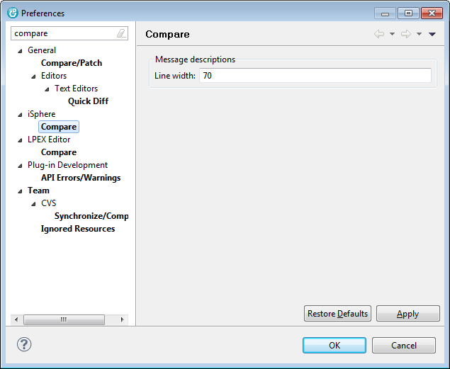

Preferences
The
Message descriptions
options are used for comparing message descriptions.

The available options for comparing message descriptions are:
Line width
-
Specifies the line width for formatting the first and second-level text when comparing message descriptions side by side.